Bir çizginin formülünü iki düzlemin kesişimi olarak gördük, fakat bu şekilde bir tanım çoğunlukla bir çizgiyi tanımlamak için en rahat / uygun yol değildir, çünkü elinizde bazı denklemler var, bunları çözmekle uğraşmak lazım, vs.
Şöyle bir yöntem daha iyi olmaz mı? Çizgi üzerinde bir nokta hayal edelim, ve bu noktanın, her zaman adımında, çizgimizin olduğu yerlerden geçtiğini düşünelim. Bu tür denklemlere parametrik denklem ismi veriliyor.
Örnek
Çizgi üzerinde iki nokta verelim.
$$ Q_0 = (-1,2,2) $$
$$ Q_1 = (1,3,-1) $$
Güzel, bu iki nokta var ama ötekilerini nasıl tanımlarız? Bu iki noktasının arasında, sonrasında, öncesinde olan tüm noktalar da çizgiye dahildir.
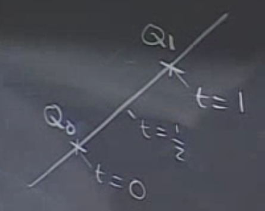
Zaman aralıklarını öyle düşünelim ki zaman indeksi sıfır ($t=0$) noktasında, çizgi $Q_0$ üzerinde, tek birim adım atıldığında ($t=1$) $Q_1$ üzerinde, gibi. O zaman yarım birim zamanda tam iki nokta ortasında.
Böylece çizgiyi temsil etmenin yolu onu $t$ bazında hareket eden noktanın geçtiği yerler olarak tanımlamak. Bu temsilin en basit hali eğer hareket sabit hızda olursa olur.
$t$ anındaki pozisyon $Q(t)$ nedir?
Sorunun cevabını şöyle vermeye başlayabiliriz: $\vec{Q_0Q(t)}$ vektörü $\vec{Q_0Q_1}$ birbiriyle ortalıdır. Bu orantı neye eşittir?
Bu oran $t$'ye eşittir. O zaman
$$ \vec{Q_0Q(t)} = t \ \vec{Q_0Q_1} $$
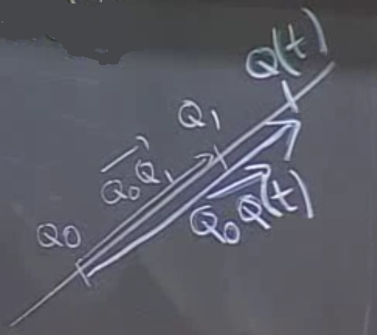
O zaman iddia ediyorum ki bu formülü kullanarak örneğimizdeki hareket eden noktanın yer formülünü bulabilirim.
$$ \vec{Q_0Q(t)} = t \ <2,1,-3> $$
Şimdi çizgi üzerinde hareket eden noktanın formülü $Q(t)$'yi şu şekilde temsil edelim
$$ Q(t) =
O zaman
$$ x(t) + 1 = 2t $$
$$ y(t) - 2 = t $$
$$ z(t) - 2 = -3t $$
Üsttekiler, alttaki şu formun açılımından ibaret aslında
$$ Q(t) = Q_0 + t \ \vec{Q_0Q_1} $$
Üstteki üç formül bu derste gördüğümüz ilk parametrik çizgi formülü. Formülün parçaları olan $x(t),y(t),z(t)$ sadece $t$'nin fonksiyonudurlar, ve hep $t$ ile bir katsayının çarpımı + bir sabit formundadırlar. $t$'nin katsayıları çizgi üzerindeki vektör hakkında bilgi verir, ve sabitler ise $t=0$ anında nerede olduğumuzu gösteren başlangıç değerleridirler.
Uygulama - Bir Düzlem ile Kesişme
Düzlem $x+2y+4z=7$. Çizgi biraz önceki formül olsun. Kesişme var mıdır, var ise nerededir?
Önce şu soruyu soralım kendimize. $x+2y+4z=7$ düzlemine göre, $Q_0 =(-1,2,2)$ ve $Q_1 = (1,3,-1)$ noktaları düzlemin
\begin{enumerate} \item Aynı tarafında \item Farklı taraflarında \item Bir tanesi düzlem üzerinde \item Karar veremiyorum \end{enumerate}
Cevaplayın.
$Q_0$ ve $Q_1$ noktalarını düzlem formülünün sol tarafına sokarız. $Q_0$ için sonuç $>7$, düzlem üzerinde değil, $Q_1$ için sonuç $<7$, yine düzlem üzerinde değil. Peki noktalar düzlemin hangi tarafında? Ters tarafında, çünkü biri $<7$, öteki $>7$ sonuç verdi. Bir düzlem uzayı iki yarı-parçaya (halfspace) ayırır ve noktalar bu ayrı parçalardadırlar. Doğru cevap 2.
Uygulamamızda cevaplanmayan bir soru daha var. Kesişme noktası neresi? $Q(t)$ nedir? Şöyle
$$ x(t) + 2y(t) + 4z(t) $$
$$ = (-1+2t) + 2(2+t) + 4(2-3t) $$
Basitleştirelim
$$ = -8t + 11 $$
Bu formülü $7$ ile karşılaştıralım çünkü $Q(t)$ nin düzlem üzerinde olduğu an $-8t + 11 = 7$ olduğu andır. Cebirsel olarak $t$'yi elde edebiliriz, sonuç $t=1/2$. Bu değeri $Q(t)$'ye koyarsak
$$ Q(\frac{1}{2}) = (0,\frac{5}{2},\frac{1}{2}) $$
Kesişim noktası eşitliğin sağındaki değerdir.
Yani eğer çizginin parametrik denklemini biliyorsak, onu düzlem formülüne sokarız, ve kesişimin hangi noktada olduğunu hemen hesaplayabiliriz.
Şimdiye kadar gördüklerimizden parametrik denklemlerin çizgileri temsil etmek için iyi bir yöntem oldukları belli olmuştur herhalde. Bunun ötesinde parametrik denklemler uzaydaki herhangi bir eğri (curve), herhangi bir gidişatı, yolu (trajectory) temsil etme kabiliyetine de sahiptir.
Genel bağlamda söylemek gerekirse, parametrik denklemleri uzayda içinde ya düzlem üzerindeki herhangi (arbitrary) bir hareketi temsil etmek için kullanabiliriz.
Cycloid (Yuvarlanma Eğrisi)
$a$ yarı çapındaki bir tekerlek yerde (x-ekseninde) dönerek ilerliyor, $P$ bu tekerleğin dış çeperinde (rim) bir nokta, başlangıç noktası 0 üzerinde. Ne olur? Daha detaylı olarak sormak gerekirse $P$ noktasının hareketini $t$'nin bir fonksiyonu $x(t),y(t)$ olarak hesaplayabilir miyiz?
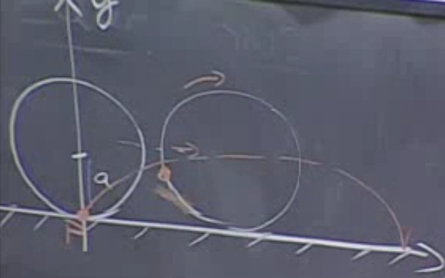
[x-ekseni biraz sağa yatik çıkmış ama bu video kamerasının açısı yüzünden]. Bu örneği bir bisikletin tekerliğine takılmış bir ışığın, bisiklet gece giderken ortaya çıkartabileceği görüntüyü düşünürek te hayal edebiliriz. Yani hem dönüş hareketi var, hem de yatay olarak düz bir gidiş hareketi var.
Bu $P$ noktasının gidiş yolunu hesaplamak için tekerleğin ne kadar hızlı döndüğü önemli mi? Hayır değil. Yavaş ta hızlı da döndürsek, $P$ aynı noktalardan geçecektir.
Bu problemde en önemli faktör zaman değil, mesafe, tekerleğin ne kadar mesafe katettiği. Ya da daha bile iyisi, mesafe ile dönüş birbirine bağlantılı olduğuna göre, ve problemdeki en çetrefil, girift oluş dönme (rotation) olduğu için, belki de tekerleğin ne kadar döndüğünü gösteren bir açı değeri, bu büyüklüğü kullanırsak belki daha faydalı olacak. Pek çok değişik temsil yöntemi olabilir, fakat açıya göre parametrize edersek en temiz formülü elde etmek mümkün olur. O zaman $x(t),y(t)$ yerine $x(\theta),y(\theta)$ kullanalım.
Yani $x(\theta),y(\theta)$ ile tekerleğin ne kadar dönmüş olduğunu belirleyen $\theta$ açı üzerinden tanımlı bir fonksiyon kullanalım.
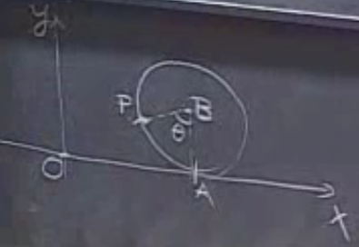
Tekerleğin nerede olduğu bilgisini ise $\vec{OP}$ vektörü ile temsil edebilirim. Buradaki tek problem vektör $\vec{OP}$ hakkında hiç bir şey bilmiyorum. Ama belki daha basit vektörler hakkında bir şeyler biliyorumdur. Mesela $\vec{AB}$ basit gibi duruyor, aynı şekilde $\vec{OA}$ fena değil, $\vec{BP}$ aynı şekilde. Peki $\vec{OP}$'yi bu daha basit vektörler üzerinden temsil edemez miyim? Edebilirim.
$$ \vec{OP} = \vec{OA} + \vec{AB} + \vec{BP} $$
O zaman bu basit vektörleri hesaplayabilirsem, daha zor olan $\vec{OP}$'yi de hesaplarım.
$$ \vec{OA} =
Niye? Vektörün $y$ bileşeni sıfır, bu bariz.
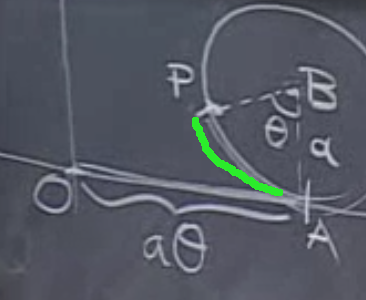
Peki niye $a\theta$? Eğer kayma, boşta dönme gibi şeyler yok ise, bu tekerleğin dış çemberinin katettiği dönüş / geldiği nokta (üstte yeşil ile işaretli), tekerleğin gittiği yer mesafesi ile aynıdır. Bu yüzeylerden birinin kavisli, diğerinin düz olması bu gerçeği değiştirmez. Yeşil ile işaretli dış çember parçasının $a\theta$ ile hesaplandığını basit matematikten biliyoruz (eğer $\theta$ radyan biriminde ise tabii, zaten bu sebeple -işleri basitleştirdiği için- matematikte hep radyan birimi kullanılır).
$\vec{AB}$ daha kolay, $x$ bileşeni sıfır, $y$ yönüne yarıçap kadar gitmiş.
$$ \vec{AB} = <0, a> $$
En son vektör $\vec{BP}$ biraz daha zor. Bu vektör hakkında neler biliyoruz? Büyüklüğünü yani $|\vec{BP}|$'yi biliyoruz ve dikey eksen ile $\theta$ kadar bir açı oluşturduğunu biliyoruz. Daha yakından bakarsak
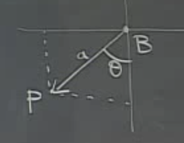
$$ \vec{BP} = <-a\sin(\theta), -a\cos(\theta)> $$
Şimdi ekleme aşamasına geldik.
$$ \vec{OP} =
Ve nihayet cevabımızı bulduk. Çünkü
$$ \vec{OP} = < \underbrace{a\theta - a\sin(\theta)}{x(\theta)}, \underbrace{a-a\cos(\theta)}{y(\theta)}
$$
Bu problemi modellerken zihnimizde oluşan, istifade ettiğimiz şekil şu:
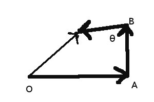
çünkü vektör toplamının geometrik olarak nasıl işlediğini biliyoruz, ve eksik kalacak tek parça, basit toplamayla elde edeceğimiz aradığımız parametrik vektör olacak. Bu yöntemi seçmemizin bir diğer sebebi üstteki parçaların hepsinin basit hesaplanabiliyor olması, her üç vektör için de yarıçap $a$ mutlaka bir hesaba dahil, ve bu yarıçap hiç değişmeyen bir şey, dolayısıyla modellememizi basitleştiriyor. Yine benzer bir sebeple $\theta$ $\vec{OP}$ vektörünün x-ekseniyle oluşturduğu açı değil, $\vec{BP}$'nin y-ekseniyle oluşturduğu açı. Böylece onun üzerinden ve $a$ ile üç vektörü hızlı bir şekilde hesaplayabiliyoruz.
Ayrıca modellemede parametre $t$ değil, $\theta$. Bu mantıklı, değişimi ile tüm vektör öğelerini bir şekilde etkileyen (ayrı formüller üzerinden tabii) her dış değişken bir parametre olarak kullanılabilir.
Şimdi gizemli bir noktayı inceleyelim. Tekerleğin dönmesi sonucu takip edilen noktanın yere değip, tekrar yukarı çıktığı anda, oluşan takip çizgisi ne şekildedir? Bilgisayar grafiğine bakalım;
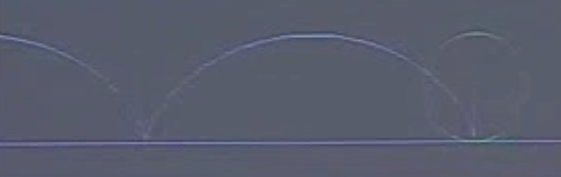
Sekil sunlardan hangisidir?
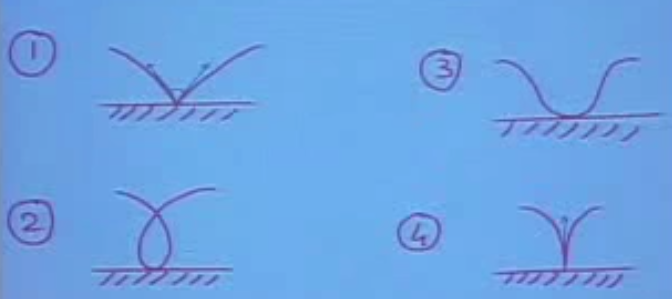
Bu cevabı vermenin en iyi yolu, formüllerimizi kullanmak.
Formülleri basitleştirmek için eğer $a=1$ alırsak,
$$ x(\theta) = \theta - \sin \theta $$
$$ y(\theta) = 1 - \cos \theta $$
Şimdi yaklaşıksal olarak düşünmeye uğraşalım. Çok küçük $\theta$ için $\sin(\theta) \approx \theta$ ve $\cos(\theta) \approx 1$. Bunları $x(\theta), y(\theta)$ içinde kullanırsak, biri 0, öteki 1 çıkacak, bunlar pek net sonuçlar değiller. Demek ki bize daha iyi yaklaşıksal (approximate) teknikler gerekiyor.
Tek Değişkenli Calculus dersinde Taylor yaklaşıksallaması (Approximation) öğretilir.
Taylor Yaklaşıksallaması
Ekler
Taylor Serisi
Bir fonksiyon $f(x)$'in bir güç serisi (power series) toplamı olduğunu farzedelim [3, sf. 805],
$$ f(x) = a_0 + a_1(x-a) + a_2(x-a)^2 + a_3(x-a)^3 + ... + a_n (x-a)^n + ...$$
Aslında $x-a$ yerine sadece $x$ kullanabilirdik, fakat $x-a$ kullanmanın cebirsel olarak bazı faydaları var; bunu birazdan göreceğiz.. Şimdi bu fonksiyonun ardı ardına türevini alalım,
$$ f'(x) = a_1 + 2a_2(x-a) + 3a_3(x-a)^2 + ... + n a_n(x-a)^{n-1} + ...$$
$$ f"(x) = 1 \cdot 2a_2 + 3 \cdot 2a_3(x-a) + .. $$
$$ f"'(x) = 1 \cdot 2 \cdot 3 (x-a) + .. $$
Taylor Serilerinin ana numarası ilk başta gördüğümüz serinin katsaylarının içini doldurmak için üstte gördüğümüz türevleri kullanmasıdır, böylece bir fonksiyonun istediğimiz kadar derecedeki türevlerini kullanarak o fonksiyonu belli bir noktada ($x=a$) yaklaşıksal olarak temsil edebiliriz. Katsayıları şöyle doldururuz, mesela ana formüldeki $a_0$ ne olacak? Ana formülde $f(a)=a_0$. Peki $a_1$? İlk türeve bakalım,
$$ f'(a) = a_1 $$
Bu basit ifade mümkün oldu çünkü $x=a$ deyince tüm $x-a$ içeren ifadeler sıfır haline geldi ve denklemden çıktılar. $a_2$ için
$$ \frac{f"(a)}{1 \cdot 2} = a_2 $$
Bu katsayıları ana formülde yerine koyalım (sadece $a_0,a_1,a_2$ için)
$$ f(x) = f(a) + f'(a)(x-a) + \frac{f"(a)}{2}(x-a)^2 + .. $$
İşte Taylor yaklaşıllaması budur! Ana formülü kaç polinom derecesi ile temsil etmek istediğimize göre üstteki türevlerin sayısı artabilir ya da azalabilir, bu probleme göre yapılması gereken bir seçidimdir - çoğunlukla 2 derece yeterlidir.
Derse dönelim,
Küçük $t$ değerleri için
$$ f(t) \approx f(0) $$
Bu kabaca bir yaklaşıksallamadır tabii ki. Biraz daha iyisi için, eğer $t$ kadar değişim olursa, bu değişimin şu şekilde eklenebileceğini farzederiz.
$$ f(t) \approx f(0) + tf'(0)$$
Biraz daha iyisi için
$$ f(t) \approx f(0) + tf'(0) + \frac{t^2}{2}f"(0)$$
Buna istediğimiz kadar devam edebiliriz
$$ f(t) \approx f(0) + tf'(0) + \frac{t^2}{2}f"(0) + \frac{t^3}{6}f"'(0)$$
Bu tekniği şimdi kullanalım
$$ \sin \theta \approx \theta - \frac{\theta^3}{6} $$
$$ \cos \theta \approx 1 - \frac{\theta^2}{2} $$
O zaman
$$ x(\theta) \approx \theta - (\theta - \frac{\theta^3}{6}) \approx \frac{\theta^3}{6} $$
$$ y(\theta) \approx 1 - (1 - \frac{\theta^2}{2}) \approx \frac{\theta^2}{2} $$
Bu değerlerden hangisi $\theta$ küçük iken daha büyük? $y(\theta)$. Yani $|x| << |y|$. Daha net bir sayı için bu iki büyüklüğün oranına bakabiliriz, bu bize bir eğim bilgisi verecektir.
$$ \frac{y}{x} = \frac{\theta^3/6}{\theta^2/2 } = \frac{3}{\theta} \to \infty, \ \ \theta \to 0 $$
Yani $\theta$ sıfıra yaklaşırken eğim neredeyse sonsuz, takip ettiğimiz nokta sağa, sola neredeyse hiç hareket etmiyor, neredeyse tüm hareket dikey şekilde. Demek ki üstte 4. şekil doğru cevap.
Problem 1E-4
$(0,1,2)$ ve $(2,0,3)$ noktalarından geçen çizgi düzlem $x + 4y + z = 4$'i nerede keser?
Cevap
A ve B noktaları üzerinden bir yön, yani bir vektör hesaplayabiliriz, $\vec{AB} = <2,-1,1>$. Sonra bu vektörün katları kadar, $t$ adımı atarak, başlangıç noktasından sonsuza kadar giden çizginin parametrik formülünü buluruz, yani $A + \vec{AB} \ t$.
$$ x = 0 + 2t = 2t $$
$$ y = 1 - t $$
$$ z = 2 + t $$
Parametrik formülü düzlem formülünde yerine koyalım.
$$ (2t) + 4(1-t) + (2+t) = 4 $$
Çözünce $t=2$ çıkar. Bunu parametrik formülde yerine koyunca $(4,-1,4)$ kesişim noktasını elde ederiz.
Problem 1E-5
$(1,1,-1)$ noktasından geçen çizgi $x+2y - z = 3$ düzlemine diktir. Bu çizgi $2x - y + z = 1$ düzlemini hangi noktada keser?
Cevap
Kesişim hesabı için çizginin parametrik denklemini bulmamız lazım. Eğer bu çizgi ilk düzleme dik ise, o düzlemin normalı "yönünde" gitmektedir, o zaman elimizde bir yön var, bir de başlangıç noktası var. O noktadan, normal yönünde $t$ adımı atmayı kodlayacağız (birinci düzlem ile kesişme önemli değil).
$$ x(t) = 1 + t $$
$$ y(t) = 1 + 2t $$
$$ z(t) = -1 -t $$
Şimdi bu çizginin ikinci düzlemle kesiştiği söylendiğine göre, şunun doğru olması gerekir
$$ 2(1+t) - (1+2t) + (-1-t) = 1 $$
Yani parametrik denklemin öğelerini teker teker ikinci düzlemin içine koymuş oluyoruz. Üstteki denklemi çözünce $t=-1$ çıkacak. Bunu alıp parametrik denkleme geri koyarsak, elde edilen nokta $(0,-1,0)$ noktasıdır [ders cevaplarında 0,1,0 deniyor, bu yanlış].
Logaritmayı Taylor Serisi İle Hesaplamak
Taylor açılımı tekniğini ilk gördüğümüzde öğrenci genelde kendine şu soruyu sorar: "İyi ama, bu ne işe yarar?" Taylor serilerini ilginç kılan özellik, bir formülü bir başkasına dönüştürmemizi sağlamaları, ve, genelde sonsuz olmayan bir formülü, sonsuza kadar devam eden terimlerin toplamı olan başka bir formül ile değiştirmemizi sağlamalarıdır.
Sonsuza kadar devam eden terimler toplamı, karışık bir durumdur. Teklikten, çokluğa niye gidilmektedir? Bu sonsuz terimler dizisi ne işe yaramaktadır? Öğrenciye göre, düzenden, düzensizliğe gidilmiştir. Niçin? Bu tür sorular, Taylor serilerinin tanıştırıldığı her derste cevaplanmalıdır. Bu yazıda, Taylor serisinin ne işe yaradığını, hangi problemler için kullanıldığını, ve ait olduğu matematiksel dünyanın hangisi olduğunu göreceğiz.
Yaklaşıklamak (Approximation)
Yaklaşıklamak, bir değeri, fonksiyonu, matematiksel bir kavramın yerine ona yakın, aşağı yukarı eşit olan başka bir değeri/fonksiyonu/kavramı koymak demektir. Gündelik hayatta bazı sayıları sürekli başkaları ile yaklaşıklamaya uğraşmaktayız. Mesela bir alan, uzunluk, hacim, vs. gibi şeyler ölçerken, mecburen yaklaşıksal kavramlar ile yüzyüze gelmekteyiz. Normalde gündelik hayatımızda sadece tamsayılar ve tamsayıların bölümü olarak gösterilebilecek rasyonel sayılar kullanırız, fakat matematikte rasyonel sayıların yanında, irrasyonel sayılar da mevcuttur. Ölçümlerimiz sırasında irrasyonel sayılar ortaya çıkmasalar da, teorik argümanlarımız ve işlemlerimiz çoğunlukla bizi o yöne doğru itiverir. Yarıçapı 1/2 olan bir çemberin uzunluğu pi denilen 'irrasyonel' sayıdır, ya da iki kenarı eşit, bir birim uzunluğunda olan dik üçgenin hipotenüsü 2'nin kareköküdür, bu sayı da irrasyonel bir sayıdır. "İrrasyonel" kelimesinin İngilizce'de 'deli', 'üşütük', veya 'mantıksız' olarak karşılık bulması da ilginçtir. İrrasyonel sayılar virgülden sonra bile sonsuza kadar devam etmektedirler [3].
Bu sebeple, irrasyonel sayılar ile işlem yaparken, onları 'rasyonel' bir sayı ile yaklaşıklamak gerekir. Bunu yapmak için çoğu zaman virgülden sonra belli bir basamak sonrasını atarız [3].
Başka bir alanı ele alalım: Doğa bilimleri sürekli fonksiyonlar ile bir yaklaşıklama eylemi içindedirler. Doğanın ölçümsel gizemleri matematikte bir fonksiyon olarak gösterilir, ve bu fonksiyonlar hiçbir zaman kesinkes, tıpatıp her seviyede ve her molekülü anlatan betimler değildir. Elde olan, yaklaşıksal olarak ve şartlara göre kesinlik derecesi bazen çok, bazen daha fazla olan bir ibaredir [3].
Bâzen de, doğal şartlara hiç alâkası olmayan "pür matematiksel" bir fonksiyonu başka bir fonksiyon ile değiştirmeye mecbur kalabiliriz. Bunu da, genelde başlangıç fonksiyonunu hesaplayabilmek için yaparız [3].
Şimdi yaklaşıklamak istediğimiz log() fonksiyonuna gelelim.
Log Nedir?
$Log(x)$ fonksiyonu en basit şekilde $f(t)=1/t$ fonksiyonunun, 1 değeri ile x değeri arasında kalan alanıdır [4]. Yani, bu fonksiyonunun entegralinin 1 ile x değeri arasındaki değeridir (entegralin alan hesapladığını lise matematiğinden biliyoruz).
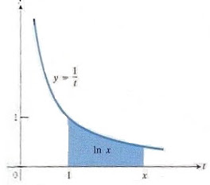
$$ \ln x = \int _{1}^{x} \frac{1}{t}, \qquad \frac{d(\ln x)}{dx} = \frac{1}{x}$$
Sembolik olarak logaritma fonksiyonu, çarpma işlemlerini toplamaya çevirmemizi sağladığı için matematiksel olarak çok yararlı bir araçtır. Zaten, keşfedilme sebebi de budur. Bu yaygın kullanım, uygulamalar için logaritmanın bir aşamada hesaplanmasını gerektirmektedir. Fakat, görüldüğü gibi 1/t fonksiyonu entegral işleminden sonra güzel bir matematiksel fonksiyona dönüşmediği için, yaklaşıksal yöntemlere gereksinim duymaktayız. Taylor açılımı işte burada imdadımıza yetişmektedir.
Örnek olarak, log(20) işleminin sonucunu Taylor serisinin yardımı ile hesaplayacağız. Niye Taylor açılımı? Çünkü log fonksiyonunun her dereceden türevi mevcut, Taylor açılımı için de bu türevler lazım.
Log'un Açılımı
Log fonksiyonunu nasıl açarken, amatör bir başlangıç şöyle olabilirdi. Dikkat edelim, şu anda sadece sembolik olarak işlem yapıyoruz.
$$ f(x) = \log(x) $$
$$ f'(x) = \frac{1}{x}, f"(x) = \frac{-1}{x^2}, f"'(x)=.. $$
$$ f(x) \approx f(a) + f'(a)(x-a)+\frac{f"(a)}{2!}(x-a)^2 + ... $$
$$ f(x) \approx \log(a) + \frac{1}{a}(x-a) + \frac{\frac{-1}{a^2}}{2!}(x-a)^2 $$
Bu pek derli toplu bir açılım olarak gözükmüyor. $a=0$ seçersek,
$$ f(x) \approx \log(a) + \frac{1}{a}(x-a) + \frac{\frac{-1}{a^2}}{2!}(x-a)^2 + ..$$
$$ f(x) \approx \log(0) + \frac{1}{a}x + \frac{\frac{-1}{0^2}}{2!}(x)^2 + ..$$
çıkar. $log(0)$ tanımsızdır. Yani bu açılım işimize yaramayacak. Daha temiz bir açılım için matematikçiler şu yöntemi bulmuştur.
$log(x)$ yerine, $log(1+x)$ kullanalım.
$$ f(x) = \log(1+x) $$
$$ f'(x) = \frac{1}{1+x}, f"(x) = \frac{-1}{1+x}^2, f"'(x) = ... $$
$$ f(x) \approx f(a) + f'(a)(x-a) + \frac{f"'(a)}{2!}(x-a)^2 + ... $$
$a = 0$ alırsak
$$ f(x) \approx \log(1+a) + \frac{1}{1+a} (x-a)+ \frac{\frac{-1}{(1+a)^2}}{2!} (x-a)^2$$
$$ f(x) \approx \log(1) + \frac{1}{1}(x) + \frac{\frac{-1}{1^2}}{2!} (x)^2$$
$$ f(x) \approx 0 + \frac{1}{1}(x) \frac{\frac{-1}{1^2}}{2!} (x)^2 $$
$$ f(x) \approx x - \frac{x^2}{2!} + \frac{x^3}{3!} ... $$
Bu çok daha temiz oldu. Dikkat ederseniz, entegrali düzgün olmayan $log()$ fonksiyonunun Taylor açımı ne kadar temiz oldu. Bu fonksiyonu bilgisayar ile hesaplamak çok basittir. Artık log(20)'yi hesaplamaya hazırız.
$$ f(x) \approx x - \frac{x^2}{2!} + \frac{x^3}{3!} ... $$
$$ \log(20) \approx 20 - \frac{20^2}{2!} + \frac{20^3}{3!} ... $$
Ama dikkat! Açılan fonksiyonunu hesaplarken x'e verdiğimiz değerin a noktasına yakın olması önemlidir.
Çok uzak noktalar (yukarıdaki log(20)'nin açılımının olduğu gibi) elimizdeki yeni seriyi uzaklastiran (diverging) bir seri haline getirebilir. Bunun tersi olan yakınlasan (converging) seriler, elinizdeki terim sayısını biz arttırdıkça, sabit bir sayıya doğru yönelen serilere denir. Bizim amacımız hesap yapmak olduğuna göre, bir somut sayıya doğru yönelen bir seriyi tabii ki tercih ederiz. Bu sebeple elimizdeki serinin, istediğimiz x değeri için yakinlasan bir seri mi, yoksa uzaklasan bir seri mi olduğunu çok iyi bilmek zorundayız.
$log(1+x)$'in Taylor açılımı sadece $-1$
Burada, log aritmetiği yardımımıza erişiyor. Log işlemlerinde, bölmenin çıkarmaya, çarpmanın toplamaya dönüştüğünü hatırlayalım. Yâni Log(x*y) = log(x) + log(y), ve log(x/y) = log(x) - log(y) olur.
O zaman, $\log(20)$'yi 1'den küçük sayılar kullanacak şekilde yeniden yazalım:
$$ \log(20) = \log( \frac{\frac{1}{2}}{\frac{1}{40}}) = \log(\frac{1}{2})-\log(\frac{1}{40}) $$
$$ \log(1+x) \approx x - \frac{x^2}{2!} + \frac{x^3}{3!} $$
Not: $(1+x)$'in $\frac{1}{2}$ vermesi için $x$'in $-\frac{1}{2}$ olması gerekir.
$$ log(\frac{1}{2}) \approx -\frac{1}{2} - \frac{-\frac{1^2}{2}}{2!} + \frac{-\frac{1^3}{2}}{3!} - ... $$
Aynı şekilde $1/40$ için durum aynıdır.
$$ log(\frac{1}{40}) \approx -\frac{39}{40} - \frac{-\frac{39^2}{40}}{2!} - \frac{-\frac{39^3}{40}}{3!} + ... $$
Bu kadar! Sağ tarafta gözüken serilerin hesabını, bir Python programı ile yaptık.
def taylor_ile_log(bolum, bolen, taylor_ile_acilim_buyuklugu):
sum = 0
for i in range(1,taylor_ile_acilim_buyuklugu):
sum += np.power(-1, i+1) * (np.power(bolum/bolen, i) / i)
return sum
print taylor_ile_log(-39.0, 40.0, 160)
-3.68527101165
LISP
;;
;; Not: (/ 1 2) yazilirsa, Common Lisp 0 cevabi veriyor.
;; Bunun sebebi, 1 2 deyince, parametrelerin integer
;; (tamsayi) olarak anlasilmasiymis, parametreler tamsayi
;; olunca, sonucta tamsayi olarak donuyor. O yuzden kesirli
;; cevaplar almak icin, (/ 1.0 2.0) demek lazim.
;;;;;;;;;;;;;;;;;;;;;;;;;;;;;;;;;;;;;;;;;;;;;;;;;;;;;;
(defun power (Base Exponent)
"Reproduced EXPT in case where Exponent is non-negative integer"
(cond
((= Exponent 0) 1)
((evenp Exponent)(Power (* Base Base) (/ Exponent 2)))
(t (* Base (Power Base (- Exponent 1))))) )
;;;;;;;;;;;;;;;;;;;;;;;;;;;;;;;;;;;;;;;;;;;;;;;;;;;;;;
(defun basit-taylor-ile-log-of-1-bolu-2 ()
(+
(* +1 ;;; taylor serisinin birinci terimi
(/
(power (/ -1.0 2.0)
1)
1)
)
(* -1 ;;; taylor serisinin ikinci terimi
(/
(power (/ -1.0 2.0)
2)
2)
)
(* +1 ;;; taylor serisinin ucuncu terimi
(/
(power (/ -1.0 2.0)
3)
3)
)
;
; vs...vs..
;
)
)
;;;;;;;;;;;;;;;;;;;;;;;;;;;;;;;;;;;;;;;;;;;;;;;;;;;;;;
(defun taylor-ile-log-hesapla (bolum bolen taylor-acilim-buyuklugu)
(let ((sum 0)(i 1))
(loop for i from 1 to taylor-acilim-buyuklugu do
(setq sum (+ sum (* (power -1 (+ i 1))
(/
(power (/ bolum bolen)
i)
i)
)))
)
sum)
)
(print "------------- 1/2 (yani log( 1 + (-1/2)) Hesabi -----")
(print "Basit kod")
(print (basit-taylor-ile-log-of-1-bolu-2))
(print "Daha cok taylor terimi kullanan kod")
(print (taylor-ile-log-hesapla -1.0 2.0 100))
(print "Bilgisayarin kendi log()'undan gelen sonuc")
(print (log (/ 1.0 2.0)))
(print "------------- 1/40 (yani log( 1 + (-39/40)) ------- ")
(print "160 taylor terimi")
(print (taylor-ile-log-hesapla -39.0 40.0 160))
(print "180 taylor terimi")
(print (taylor-ile-log-hesapla -39.0 40.0 180))
(print "200 taylor terimi")
(print (taylor-ile-log-hesapla -39.0 40.0 200))
(print "220 taylor terimi")
(print (taylor-ile-log-hesapla -39.0 40.0 220))
(print "240 taylor terimi")
(print (taylor-ile-log-hesapla -39.0 40.0 240))
(print "260 taylor terimi")
(print (taylor-ile-log-hesapla -39.0 40.0 260))
(print "Bilgisayarin kendi algoritmasina gore log(1/40)")
(print (log (/ 1.0 40.0)))
(print "--------------- Sonuc --------------------- ")
(print "log(1/2) - log(1/40)")
(print (- (taylor-ile-log-hesapla -1.0 2.0 100)
(taylor-ile-log-hesapla -39.0 40.0 200)))
(print "Bilgisayarin mevcut algoritmasinin verdigi ")
(print (log 20))
İki Boyutlu f(x,y) Fonksiyonunun Taylor Açılımı
Bir $f(x,y)$ fonksiyonunun Taylor açılımını yapmak için, daha önceden gördüğümüz tek boyutlu fonksiyon açılımından faydalanabiliriz [2].
Önce iki boyutlu fonksiyonu tek boyutlu olarak göstermek gerekir. Tek boyutta işleyen bir fonksiyon $F$ düşünelim ve bu $F$, arka planda iki boyutlu $f(x,y)$'ı kullanıyor olsun
Eğer
$$ f(x_0 +\Delta x, y_o + \Delta y) $$
fonksiyonun açılımını elde etmek istiyorsak, onu
$$ F(t) = f(x_0 + t\Delta x, y_o + t\Delta y) $$
üzerinden $t=1$ olduğu durumda hayal edebiliriz. $x,y$ parametrize olduğu için $f(x(t),y(t))$, yani
$$ x(t) = x_0 + t\Delta x $$
$$ y(t) = y_0 + t\Delta y $$
$F(t)$ bağlamında $x_o, y_o, \Delta x, \Delta y$ sabit olarak kabul edilecekler. Şimdi bildiğimiz tek boyutlu Taylor açılımını bu fonksiyon üzerinde, bir $t_0$ noktası yakınında yaparsak,
$$ F(t) = F(t_0) + F'(t_0)(t-t_0) + \frac{1}{2}F"(t_0)(t-t_0)^2 + ... $$
Eğer $t=1,t_0=0$ dersek
$$ F(1) = F(0) + F'(0) + \frac{1}{2}F"(0) + ... $$
olurdu. Bu iki değeri, yani $t=1,t_0=0$'i kullanmamızın sebepleri $t=1$ ile mesela $x_0 + t\Delta x$'in $x_0 + \Delta x$ olması, diğer yandan $t=0$ ile üstteki formülde $t$'nin yokolması, basit bir tek boyutlu açılım elde etmek.
Şimdi bize gereken $F',F"$ ifadelerini $x,y$ bağlamında elde edelim, ki bu diferansiyeller $F$'in $t$'ye göre birinci ve ikinci diferansiyelleri. Ama $F$'in içinde $x,y$ olduğu için açılımın Zincirleme Kanunu ile yapılması lazım.
$$ \frac{dF}{dt} = \frac{\partial F}{\partial x}\frac{\mathrm{d} x(t)}{\mathrm{d} t} + \frac{\partial F}{\partial y}\frac{\mathrm{d} y(t)}{\mathrm{d} t} $$
Ayrıca
$$ \frac{d}{dt}x(t) = \Delta x $$
$$ \frac{d}{dt}y(t) = \Delta y $$
olduğuna göre, tam diferansiyel daha da basitleşir
$$ \frac{\mathrm{d} F}{\mathrm{d} t} = \frac{\partial F}{\partial x}\Delta x + \frac{\partial F}{\partial y}\Delta y $$
Şimdi bu ifadenin bir tam diferansiyelini alacağız. Ama ondan önce şunu anlayalım ki üstteki ifade içinde mesela birinci terim de aslında bir fonksiyon, ve asıl hali
$$ \frac{\mathrm{d} F}{\mathrm{d} t} = \frac{\partial F(x(t),y(t))}{\partial x}\Delta x + ... $$
şeklinde. O zaman, bu terim üzerinde tam diferansiyel işlemini bir daha uyguladığımızda, Zincirleme Kanunu yine işleyecek, mesela üstte $\mathrm{d} x(t)/ \mathrm{d} t$'nin bir daha dışarı çıkması gerekecek. O zaman
$$ \frac{d^2F}{dt} = \bigg( \frac{\partial ^2 F}{\partial x^2}\frac{dx}{dt} + \frac{\partial ^2 F}{\partial x \partial y}\frac{dy}{dt} + \bigg) \Delta x + \bigg( \frac{\partial ^2 F}{\partial y \partial x}\frac{dy}{dt} + \frac{\partial ^2 F}{\partial y^2}\frac{dx}{dt} + \bigg) \Delta y $$
$$ = \bigg( \frac{\partial ^2 F}{\partial x^2}\Delta x + \frac{\partial ^2 F}{\partial x \partial y}\Delta y \bigg) \Delta x + \bigg( \frac{\partial ^2 F}{\partial y \partial x}\Delta x + \frac{\partial ^2 F}{\partial y^2}\Delta y \bigg) \Delta y $$
$$ = \bigg( \frac{\partial ^2 F}{\partial x^2}\Delta x^2 + \frac{\partial ^2 F}{\partial x \partial y}\Delta y \Delta x \bigg) + \bigg( \frac{\partial ^2 F}{\partial y \partial x}\Delta x \Delta y + \frac{\partial ^2 F}{\partial y^2}\Delta y^2 \bigg) $$
Calculus'tan biliyoruz ki
$$ \frac{\partial ^2 F}{\partial x \partial y} = \frac{\partial ^2 F}{\partial y \partial x} $$
Daha kısa notasyonla
$$ f_{xy} = f_{yx} $$
Yani kısmi türevin alınma sırası farketmiyor. O zaman, ve her şeyi daha kısa notasyonla bir daha yazarsak
$$ = (f_{xx}\Delta x^2 + f_{xy}\Delta y \Delta x ) + (f_{xy}\Delta x \Delta y + f_{yy}\Delta y^2 ) $$
$$ \frac{d^2F}{dt} = (f_{xx}\Delta x^2 + 2f_{xy}\Delta y \Delta x + f_{yy}\Delta y^2 ) $$
Artık elimizde $F$ ve $F'$ var, bunları
$$ F(1) = F(0) + F'(0) + \frac{1}{2}F"(0) + ... $$
içine yerleştirebiliriz. En son şu kaldı, $F(0)$ nedir? $F$'in $t=0$ olduğu anda değeridir,
$$ F(t) = f(x_0 + t\Delta x, y_o + t\Delta y) $$
$$ F(0) = f(x_0 + 0 \cdot \Delta x, y_o + 0 \cdot \Delta y) $$
$$ = f(x_0 , y_o) $$
Benzer şekilde, tüm türevler de $t=0$ noktasında kullanılacaktır, o zaman onlar da
$$ F'(0) = f_x(x_0,y_0) \Delta x + f_y(x_0,y_0) \Delta y $$
$$ F"(0) =
f_{xx}(x_0,y_0)\Delta x^2 + 2f_{xy}(x_0,y_0)\Delta y \Delta x +
f_{yy}(x_0,y_0)\Delta y^2
$$
şeklinde olurlar. Tamam. Şimdi ana formülde yerlerine koyalım,
$$ \begin{array}{lll} F(1) &=& f(x_0 +\Delta x, y_o + \Delta y) \\ \\ &=& f(x_0 , y_o) + f_x(x_0,y_0) \Delta x + f_y(x_0,y_0) \Delta y + \\ \\ && \frac{1}{2} [ f_{xx}(x_0,y_0)\Delta x^2 + 2f_{xy}(x_0,y_0)\Delta y \Delta x + f_{yy}(x_0,y_0)\Delta y^2 ] + ... \end{array} $$
Çizgi Düzlem Kesişmesi
Elimizde $P = 2x + y - 4z = 4$ düzlemi var. Bu düzlemin
$$ x = t \quad y = 2 + 3t \quad z = t$$
çizgisi ile kesiştiği yer neresidir?
Cevap kolay; çizgi denkleminde $t$ bazlı tanımlı $x,y,z$ değerleri $P$'ye sokarsak, tek bilinmeyeni $t$ olan bir denklem çıkar,
$$ 2(t) + (2+3t)-4(t) = 4 \Rightarrow t = 2$$
Çizgi Düzlem Kesişmesini Vektörler ile Hesaplamak
Üstteki yöntem cebirsel manipülasyon gerektiriyor, fakat sayısal hesap için sembolik cebir işlemlerine girmeden vektör matematiği ile direk bir sonuç bulamaz mıyız? [1,4]'ü temel alalım: alttaki durumu düşünelim,
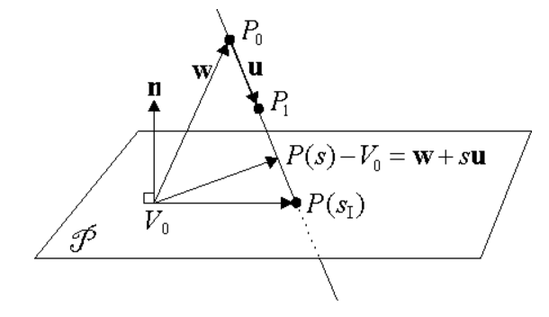
Grafiğe göre $P(s)$ $P_1$ ve $P_0$ arasındaki birim vektörün $s$ kadar uzatılmış hali olsun, o aralığı $u$ kabul edersek $P(s)-V_0 = w + su$ olur. Düzlem ile kesişmenin olduğu noktayı $P(s_I)$ diye tanımlayalım, aradığımız nokta burası. O noktada $n$ ile $P(s_I)$ dikgen olacaktır, yani $P(s) - V_0 = w + su$ vektörü $n$'e dikgen olacaktır, ki $w=P_0-V_0$. Bu durumda $n \cdot (w+su) = 0$ olur. Bunu kullanarak,
$$ s_I = \frac{-n \cdot w}{n \cdot u} = \frac{n \cdot (V_0 - P_0)}{n \cdot (P_1-P_0)} = \frac{-(ax_0 + by_0 + cz_0 + d)}{n \cdot u} $$
n = np.array([1., 1., 1.])
V0 = np.array([1., 1., -5.])
P0 = np.array([-5., 1., -1.])
P1 = np.array([1., 2., 3.])
w = P0 - V0;
u = P1-P0;
N = -np.dot(n,w);
D = np.dot(n,u)
sI = N / D
I = P0+ sI*u
print I
[-3.90909091 1.18181818 -0.27272727]
Grafiklersek
import sys; sys.path.append('../../vision/vision_02')
import plot3d
f = plt.figure()
ax = f.gca(projection='3d')
w = 10
ax.set_xlim(-w,w);ax.set_ylim(-w,w);ax.set_zlim(-w,w)
ax.set_xlabel("X")
ax.set_ylabel("Y")
ax.set_zlabel("Z")
v = P1-P0
ax.quiver(P0[0], P0[1], P0[2], v[0], v[1], v[2], color='red')
ax.scatter(V0[0], V0[1], V0[2], color='black')
ax.scatter(V0[0]+n[0], V0[1]+n[1], V0[2]+n[2], color='black')
ax.scatter(I[0], I[1], I[2], color='black')
ax.quiver(V0[0], V0[1], V0[2], n[0], n[1], n[2], color='blue')
plot3d.plot_plane(ax, list(V0), list(n), color='y')
plt.savefig('5_10.png')
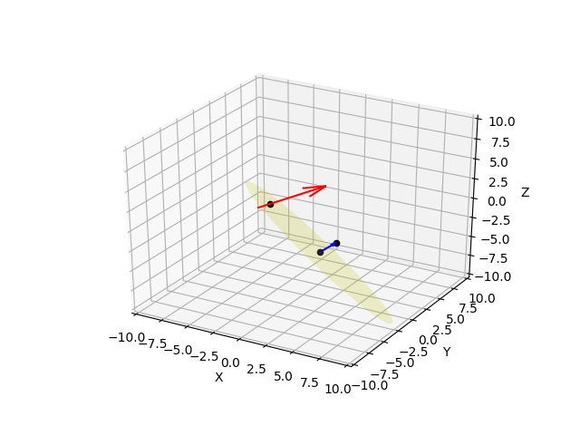
Çizgi Parçasına Noktanın En Yakın Mesafesi
Elimizde verili iki nokta arasında tanımlı çizgi parçası var. Herhangi bir noktanın bu parçaya en yakın mesafesi nedir? Ayrıca o noktadan parçaya bir düz çizgi çekilse kesişimin olduğu nokta nerededir?
Şu metota bakalım [5]. Çizgiyi $\vec{z} = \vec{a} + t \vec{b}$ olarak tanımlayabiliriz. O zaman bu çizgi ile bir diğer nokta $\vec{x}$ arasındaki mesafe $\vec{x}-\vec{z}$ vektörünün uzunluğudur, yani
$$ || \vec{x} - (\vec{a} + t' \vec{b}) || $$
olarak tanımlanabilir, ki burada $t'$ özel bir $t$ değeri oluyor. Bu değer öyle bir $t$ değeri ki o noktaya kadar gelen $\vec{z}$'nin bolumu $\vec{x}$'e dik. Bu noktayı ve ardından çizgiye olan (dik) mesafeyi nasıl buluruz?
Şimdi üstteki çizgi formülünde kesişim anına kadar olan bölümdeki, $t'$'ye tekabül eden kısma $\vec{r}$ diyelim, ve onu
$$ \vec{r} = \vec{a} + t' \vec{b} $$
olarak gösterelim. İstediğimiz $||\vec{r}-\vec{x}||$ uzunluğunu bulmak. $t'$ değerinde aradaki vektör $\vec{b}$'ye dik olduğuna göre
$$ (\vec{x} - \vec{r}) \cdot \vec{b} = 0 $$
$\vec{r}$ formülünü açalım,
$$ = (\vec{x} - \vec{a} - t' \vec{b}) \cdot \vec{b} = 0 $$
$$ = \vec{x}\cdot\vec{b} - \vec{a}\cdot\vec{b} - t'||b||^2 = 0 $$
$$ t' = \frac{\vec{x}\cdot\vec{b} - \vec{a}\cdot\vec{b}}{||b||^2} $$
Örnek
$<2,2>$ ve $<5,5>$ noktaları noktalarından geçen çizgiye $<4,1>$ noktasının uzaklığı nedir? Kesişim nerede olur?
def dist(x1,y1,x2,y2,px,py):
a = np.array([[x1,y1]]).T
b = np.array([[x2,y2]]).T
x = np.array([[px,py]]).T
tp = (np.dot(x.T, b) - np.dot(a.T, b)) / np.dot(b.T, b)
tp = tp[0][0]
tmp = x - (a + tp*b)
d = np.sqrt(np.dot(tmp.T,tmp)[0][0])
return d, a+tp*b
x1,y1=2.,2.
x2,y2=5.,5.
px,py=4.,1.
d, inters = dist(x1,y1, x2,y2, px,py)
print (d)
print (inters)
2.1213203435596424
[[2.5]
[2.5]]
Not: Üstteki metot 2, 3 üzeri boyutlar için de işleyecektir.
Kaynak
[1] Sunday, Intersection of Lines and Planes, http://geomalgorithms.com/a05-_intersect-1.html
[2] Feldman, Taylor Polynomials in Dimension Two, http://www.math.ubc.ca/~feldman/m200/taylor2dSlides.pdf
[3] Thomas, Thomas' Calculus
[4] Khaled, Straight Line and Plane Intersection Matlab Code, https://uk.mathworks.com/matlabcentral/fileexchange/17751-straight-line-and-plane-intersection
[5] Distance between Point and Line, https://brilliant.org/wiki/distance-between-point-and-line/